<header class="site-header" role="banner">

    <div class="wrapper">

        <nav class="site-nav">
            <input type="checkbox" id="nav-trigger" class="nav-trigger" />
            <label for="nav-trigger">
                <span class="menu-icon">
                    
                </span>
            </label>

            <div class="trigger">
                {%- assign page_paths = site.pages | map: "path" -%}
                {%- for path in page_paths -%}
                    {%- assign my_page = site.pages | where: "path", path | first -%}
                    
                    {%- if my_page.title -%}
                        <a class="page-link" href="{{ my_page.url | relative_url }}">
                            {{ my_page.title | escape }}
                        </a>
                    {%- endif -%}
                {%- endfor -%}
            </div>
        </nav>
    </div>
</header>
